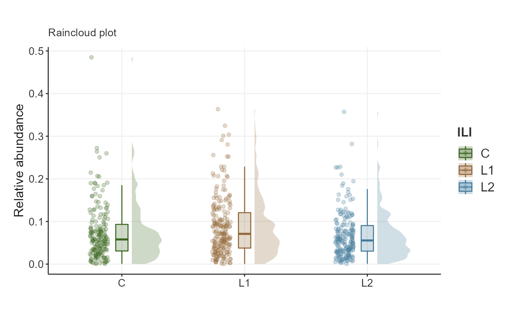

Themes.RdStandard ggplot2 theme for RIVM Toolbox
Function to extract biomeViz colors as hex codes
List of biomeViz colors
biomeViz palettes
Return function to interpolate a biomeViz color palette
Color scale constructor for biomeViz colors
Fill scale constructor for biomeViz colors
theme_biomViz(base_size = 12, base_family = "")
theme_biomViz_minimal(base_size = 11, base_family = "")
theme_biomViz_bw(base_size = 11, base_family = "")
scale_fill_biomeViz_summer(...)
scale_colour_biomeViz_summer(...)
biomeViz_cols(...)
biomeViz_colors
biomeViz_palettes
biomeViz_pal(palette = "summer", reverse = FALSE, ...)
scale_color_biomeViz(palette = "summer", discrete = TRUE, reverse = FALSE, ...)
scale_fill_biomeViz(palette = "summer", discrete = TRUE, reverse = FALSE, ...)An object of class character of length 7.
An object of class list of length 3.
Base size
Base family
Additional arguments passed to discrete_scale() or scale_fill_gradientn(), used respectively when discrete is TRUE or FALSE
Character name of palette in biomeViz_palettes
Boolean indicating whether the palette should be reversed
Boolean indicating whether color aesthetic is discrete or not
A standard theme for ggplot2 to produce similar aesthetics for RIVM Toolbox.
library(biomeUtils)
library(biomeViz)
library(microbiome)
library(ggplot2)
library(dplyr)
ps <- FuentesIliGutData %>%
microbiome::aggregate_taxa("Genus") %>%
microbiome::transform("compositional")
plotTaxaRaincloud(ps,
taxa ="Bacteroides",
group_samples_by = "ILI",
opacity = 0.25,
shape_point = 21) + # combine with ggplot2 for improvements
labs(y = "Relative abundance",
x = "",
subtitle = "Raincloud plot") +
theme_biomViz_minimal()+
scale_fill_biomeViz(palette = "viz3") +
scale_color_biomeViz(palette = "viz3")
